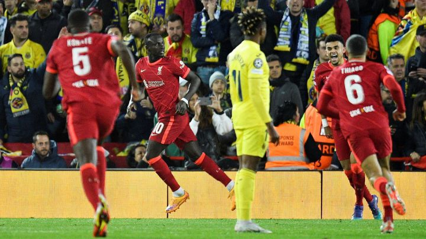
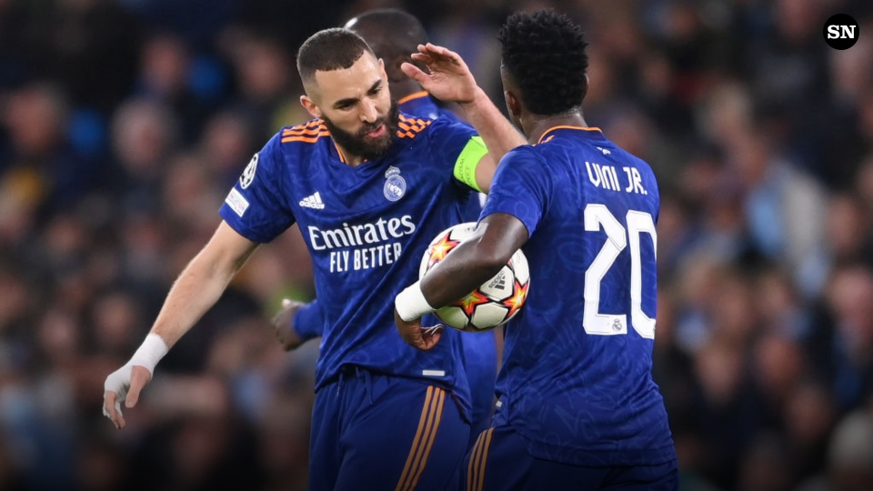

-
Liverpool vs Villareal

Liverpool pasa a la final en un partido que se complico en la primera parte pero en la segunda parte el equipo de klopp se llevo el partido
Real Madrid vs Manchester City
